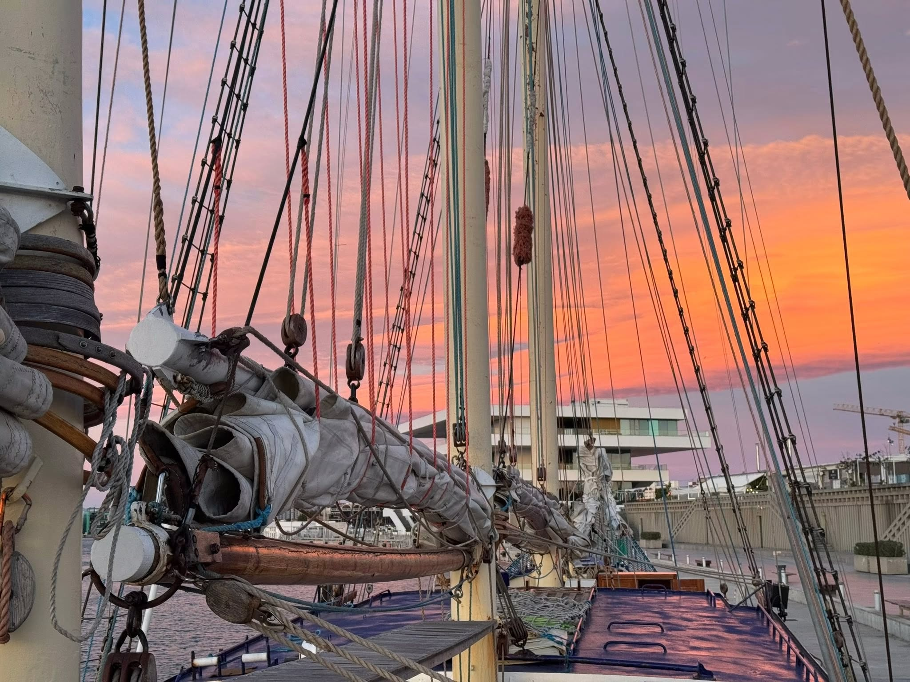
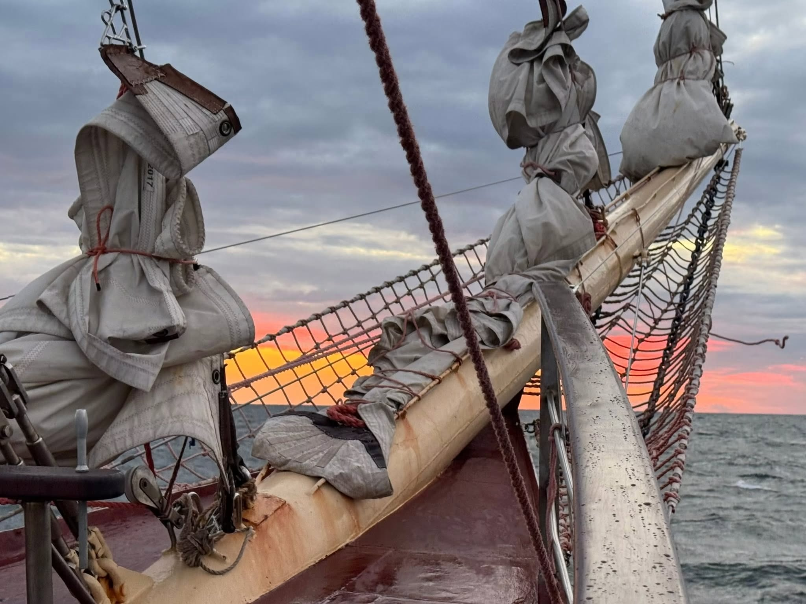
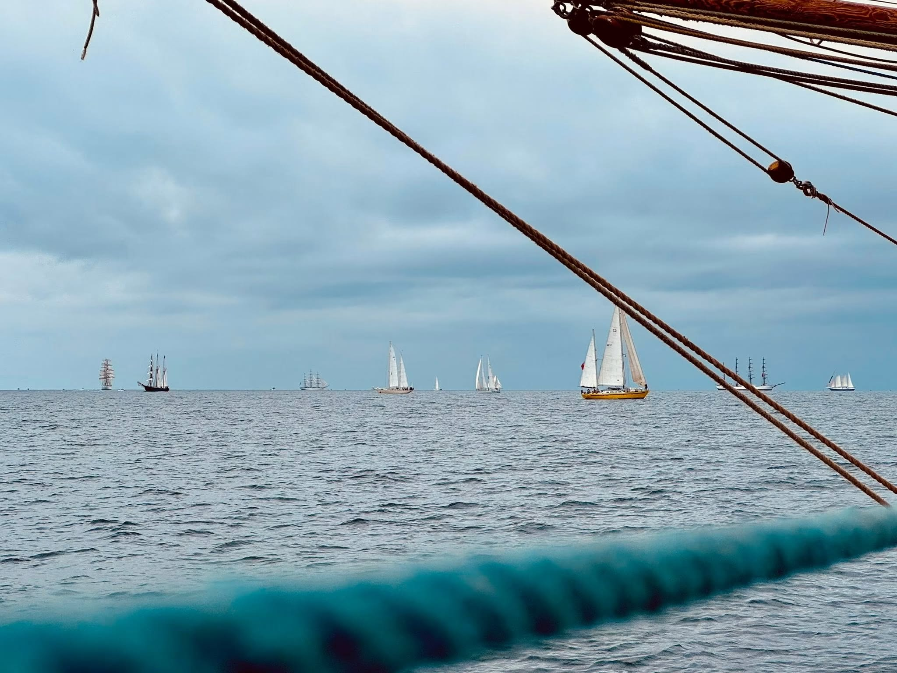
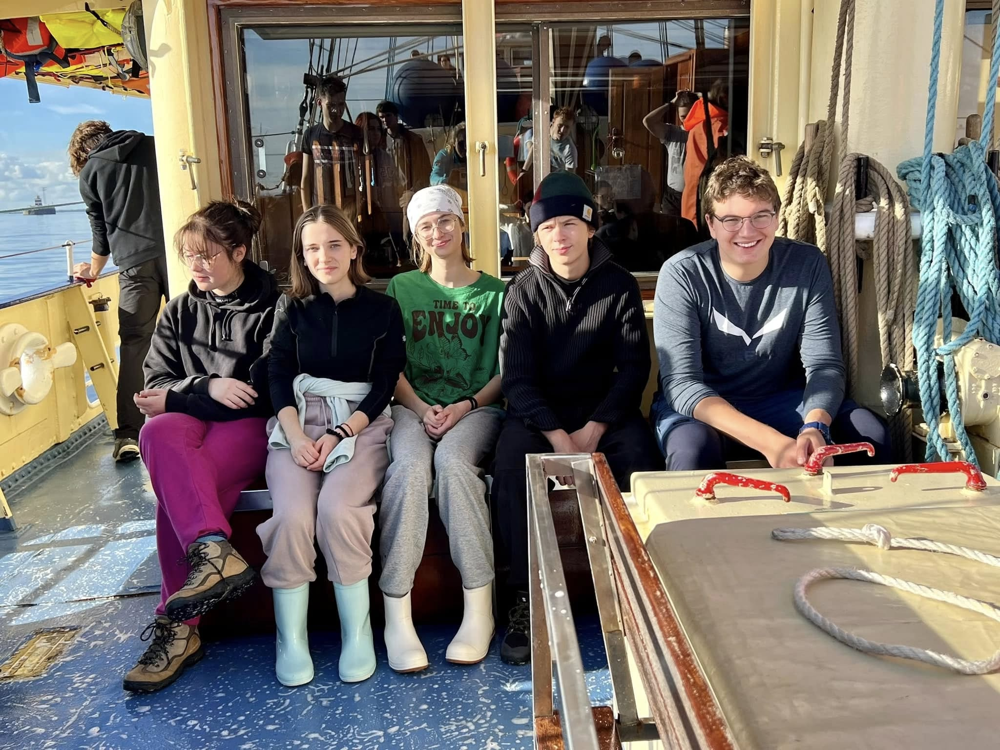
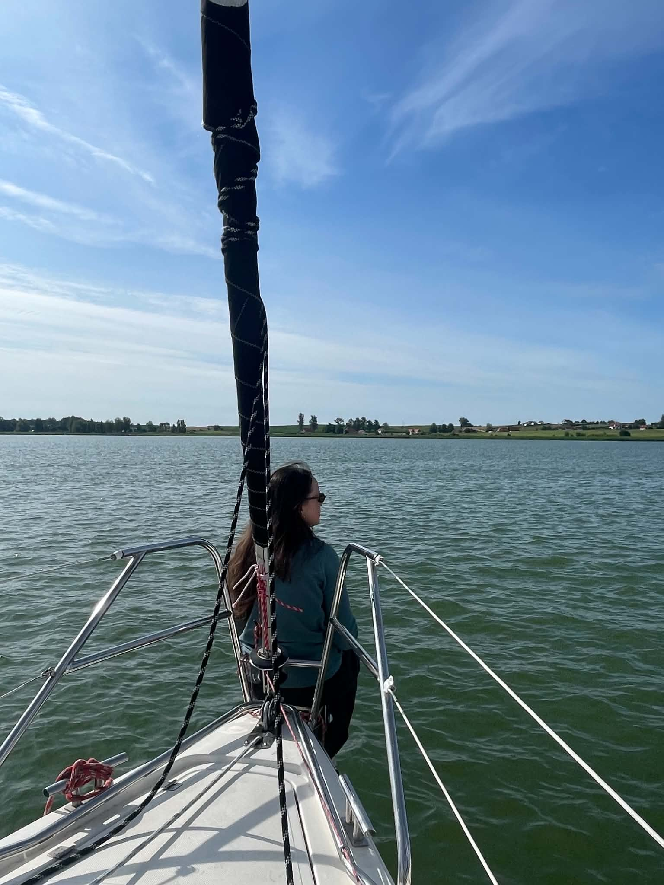
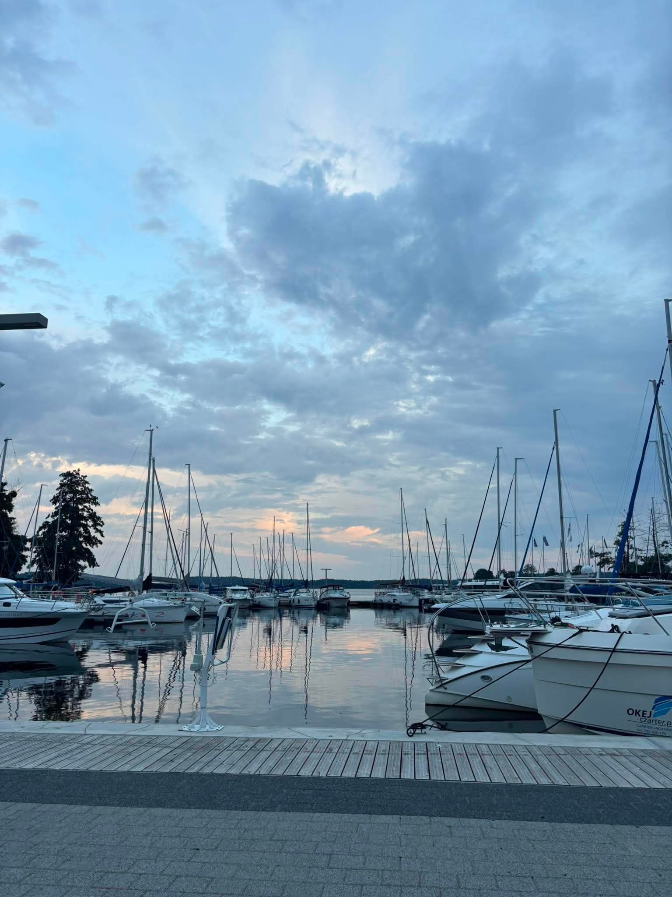
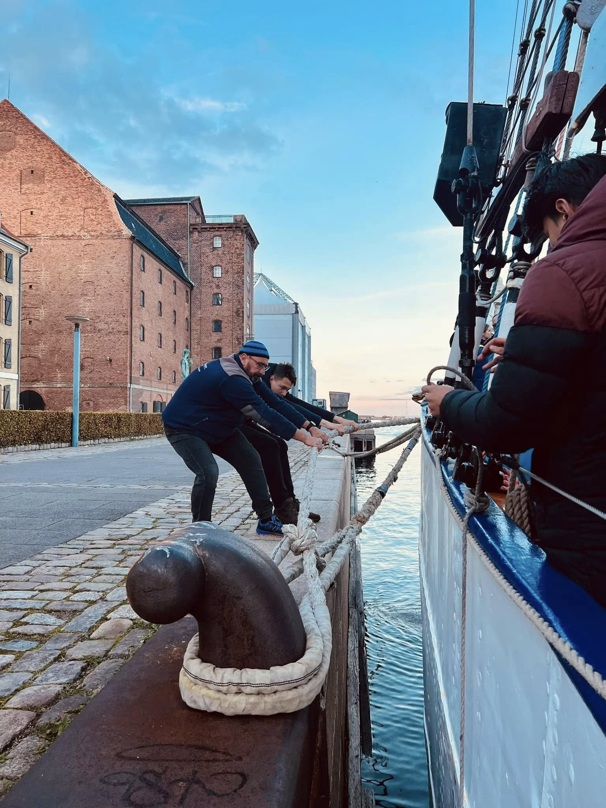

Kadry z rejsów i szkoleń
Wybierz kategorię, aby przefiltrować zdjęcia z wypraw morskich i mazurskich.







Wybierz kategorię, aby przefiltrować zdjęcia z wypraw morskich i mazurskich.






